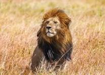
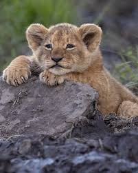

EL leon: El rey de la sabana
El león (Panthera leo) es un mamífero carnívoro de la familia de los félidos y una de las cinco especies del género Panthera. Conocido popularmente como el "rey de la selva" (aunque habita principalmente en la sabana), destaca por su imponente físico. Algunos machos excepcionalmente grandes llegan a pesar hasta 250 kg, lo que los convierte en el segundo félido viviente más grande del planeta, superado únicamente por el tigre. Su presencia es vital para el equilibrio de los ecosistemas, ya que actúa como un superpredador regulador de las poblaciones de herbívoros.
Actualmente, los leones salvajes viven en poblaciones cada vez más dispersas y fragmentadas debido a la pérdida de hábitat y la caza furtiva. Aunque su territorio histórico abarcaba gran parte de África, Asia y Europa, hoy en día están confinados principalmente al África subsahariana, junto con una pequeña y vulnerable población en el Parque Nacional del Bosque de Gir, en el noroeste de la India. Una de sus características físicas más reconocibles es la melena del león macho. Esta corona de pelo varía en color desde el rubio hasta el negro intenso; una melena más oscura y densa suele indicar un excelente estado de salud, niveles altos de testosterona y una mayor capacidad de protección para la manada.
Dentro de la estructura social, las hembras de la manada (las leonas) suelen realizar la mayor parte de la cacería de forma coordinada. Al ser más pequeñas, ágiles y rápidas que los machos, trabajan en equipo utilizando estrategias complejas para acorralar a presas grandes como cebras, ñus, búfalos e incluso jirafas. Aprovechan la vegetación alta de la sabana para ocultarse y acechar pacientemente antes de lanzar un ataque explosivo. A pesar de que ellas consiguen el alimento, los machos dominantes suelen ser los primeros en alimentarse debido a su rol prioritario en la defensa del territorio frente a hienas u otras manadas rivales.

León macho con melena

Leonas al asecho

Cachorro de león